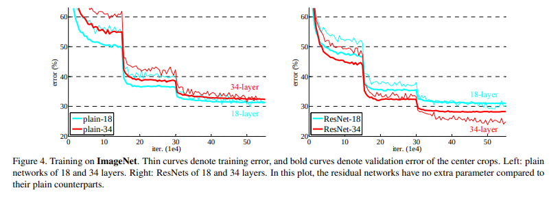
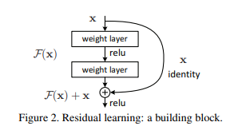
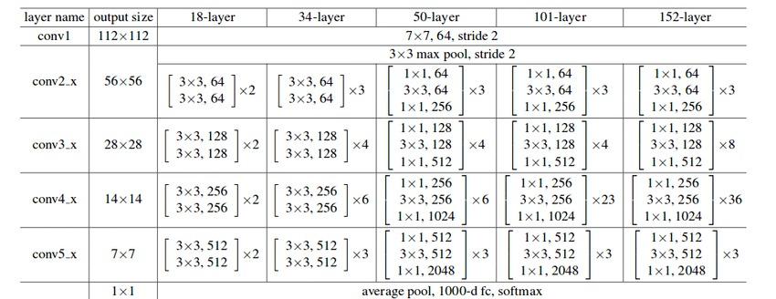
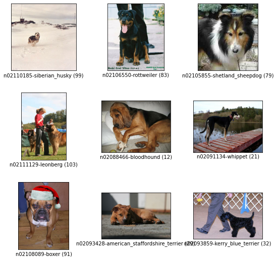

Code
!pip install -q tfds
import tensorflow as tf
from tensorflow import keras
import tensorflow_datasets as tfds
import os
import PIL
import pathlib
import PIL.Image
import warnings
warnings.filterwarnings("ignore")
from datetime import datetimeThe ResNet architecture is considered to be among the most popular Convolutional Neural Network architectures around. Introduced by Microsoft Research in 2015, Residual Networks (ResNet in short) broke several records when it was first introduced in this paper by He. et. al
The requirement for a model like ResNet arose due to a number of pitfalls in modern networks at the time.
Difficulty in training deep neural networks: As the number of layers in a model increases, the number of parameters in the model increases exponentially. For each Convolutional layer, a total of \(((height_{kernel} \cdot width_{kernel} \cdot filters_{input}) + 1) \cdot filters_{output}\) gets added to the bill. To put it into context, a simple 7x7 kernel Convolution layer from 3 channels to 32 channels adds 4736 parameters. An increase in the number of layers in the interest of experimentation leads to an equal increase in complexity for training the model. Training then requires greater computational power and memory.
More expressive, less different: A neural network is often considered to be a function approximator. It has the ability to model functions given input, target and a comparison between the function output and target. Adding multiple layers into a network makes it more capable to model complex functions. But results published in the paper stated that a 20-layer plain neural network performs considerably better than a 56-layer plain neural network as can be seen in the below graph.

Adding layers can be seen as an expansion of the function space. For example, multiple layers added together can be seen as a function \(F\). This function \(F\) can be expressed as a representation of a function space \(F`\) that it can reach/model.
Having your desirable function in \(F'\) would be a lucky chance, but more often than not, it is not the case. Adding layers here allows us to expand and change around the function space \(F'\), allowing us to cover a larger space in the larger parent function space consisting of all possible functions in the conceivable universe. But this method has an inherent pitfall. As the function space becomes larger, there is no guarantee that we get closer to our target function. In fact, there is a good chance that in the experimental phase, you move away from the function space that may have the function you actually need.
Did the jargon confuse you? Let’s take an analogy of a needle and a haystack.
Let the needle be the perfect weights of the neural network, or as explained before, a function. Let the haystack be all the possible functions that can be made.
One starts from a single search area and tries to zero into the needle from there. Adding layers is equivalent to moving your search area and making it bigger. But that comes with the risk of moving away from the place where the needle actually is as well as making our search more time-consuming and difficult. Larger the haystack, more difficult it is to find the perfect needle. What is the solution, then?
Quite simple and elegant, actually. Nest your function spaces.
This is done for a few simple reasons. The most important one being the fact that it allows you to ensure that while the model adds layers to increase the size of the function space, you don’t end up degrading the model. This gives the guarantee that while our model can do better with more layers, it will not do any worse.
Coming back to our haystack analogy, this is equivalent to making our search space larger, but making sure that we do not move away from our current search space.

Vanishing/Exploding Gradient: This is one of the most common problems plaguing the training of larger/deep neural networks and is a result of oversight in terms of numerical stability of the network’s parameters.
During backpropagation, as we keep moving from the deep to the shallow layers, the chain rule of differentiation makes us multiply the gradients. Often, these gradients are small, to the order of \(10^{-5}\) or more. According to some simple math, as these small numbers keep getting multiplied with each other, they keep becoming infinitesimally smaller, making almost negligible changes to the weights.
On the other end of the spectrum, there are cases when the gradient reaches orders upto \(10^{4}\) and more. As these large gradients multiply with each other, the values tend to move towards infinity. Allowing such a large range of values to be in the numerical domain for weights makes convergence difficult to achieve.
This problem is popularly known as the Vanishing/Exploding gradient problem. ResNet, due to its architecture, does not allow these problems to occur at all. How so? The skip connections (described ahead) do not allow it as they act as gradient super-highways, allowing it to flow without being altered by a large magnitude.
The ResNet paper popularized the approach of using Skip Connections. If you recall, the approach to solving our function space problems was to nest them. In terms of applying it to our use-case, it was the introduction of a simple addition of the identity function to the output.
In mathematical terms, it would mean \(y = x + F(x)\) where y is the final output of the layer.

In terms of architecture, if any layer ends up damaging the performance of the model in a plain network, it gets skipped due to the presence of the skip-connections

The ResNet-50 architecture can be broken down into 6 parts 1. Input Pre-processing 2. Cfg[0] blocks 3. Cfg[1] blocks 4. Cfg[2] blocks 5. Cfg[3] blocks 6. Fully-connected layer
Different versions of the ResNet architecture use a varying number of Cfg blocks at different levels, as mentioned in the figure above. A detailed, informative listing can be found below

The best way to understand the concept is through some code. The implementation below is done in Keras, uses the standard ResNet-50 architecture (ResNet has several versions, differing in the depth of the network). We will train the model on the famous Stanford Dogs dataset by Stanford AI
!pip install -q tfds
import tensorflow as tf
from tensorflow import keras
import tensorflow_datasets as tfds
import os
import PIL
import pathlib
import PIL.Image
import warnings
warnings.filterwarnings("ignore")
from datetime import datetimeWe download the Stanford Dogs dataset using Tensorflow Datasets (stable) and split it into a training, validation and test set.
Along with the images and labels, we also get some meta-data which gives us more information about the dataset. That is stored in ds_info and printed in a human-readable manner.
We also make use of tfds.show_examples() to print some random example images and labels from the dataset.
We run tfds.benchmark() to perform a benchmarking test on the iterator provided by tf.data.Dataset
We perform the following best-practice steps on the tf.data.Dataset object to make it efficient: - batch(BATCH_SIZE) : Allows us to prepare mini-batches within the dataset. Note that the batching operation requires all images to be of the same size and have the same number of channels - map(format_image) : Cast the image into a tf.float32 Tensor, normalize all values in the range \([0,1]\), resize the image from its original shape to the model-input shape of \((224, 224, 3)\) using the lanczos3 kernel method - prefetch(BUFFER_SIZE) : Pre-fetch brings in the next batch of the dataset during training into memory while the current batch is being processed, reducing the I/O time but requiring more memory in the GPU - cache() : Caches the first batch of the iterator to reduce load-times, similar to prefetch with the difference simply being that cache will load the files but not push into GPU memory
(train_ds, valid_ds, test_ds), ds_info = tfds.load(
'stanford_dogs',
split=['train', 'test[0%:10%]', 'test[10%:]'],
shuffle_files=True, with_info=True,
as_supervised=True
)
print("Dataset info: \n")
print(f'Name: {ds_info.name}\n')
print(f'Number of training samples : {ds_info.splits["train"].num_examples}\n')
print(f'Number of training samples : {ds_info.splits["test"].num_examples}\n')
print(f'Description : {ds_info.description}')
tfds.show_examples(train_ds, ds_info)
CLASS_TYPES = ds_info.features['label'].num_classes
BATCH_SIZE = 4
print('Benchmark results')
tfds.benchmark(train_ds)
def format_image(image, label):
image = tf.cast(image, tf.float32)
image = image / 255.0
image = tf.image.resize_with_pad(image, 224, 224, method='lanczos3', antialias=True)
return image, label
def prepare_ds(ds):
ds = ds.map(format_image)
ds = ds.batch(BATCH_SIZE)
ds = ds.prefetch(tf.data.AUTOTUNE)
ds = ds.cache()
return ds
train_ds = prepare_ds(train_ds)
valid_ds = prepare_ds(valid_ds)
test_ds = prepare_ds(test_ds)Downloading and preparing dataset 778.12 MiB (download: 778.12 MiB, generated: Unknown size, total: 778.12 MiB) to /root/tensorflow_datasets/stanford_dogs/0.2.0...
Dataset stanford_dogs downloaded and prepared to /root/tensorflow_datasets/stanford_dogs/0.2.0. Subsequent calls will reuse this data.
Dataset info:
Name: stanford_dogs
Number of training samples : 12000
Number of training samples : 8580
Description : The Stanford Dogs dataset contains images of 120 breeds of dogs from around
the world. This dataset has been built using images and annotation from
ImageNet for the task of fine-grained image categorization. There are
20,580 images, out of which 12,000 are used for training and 8580 for
testing. Class labels and bounding box annotations are provided
for all the 12,000 images.
Benchmark results
************ Summary ************
Examples/sec (First included) 787.00 ex/sec (total: 12000 ex, 15.25 sec)
Examples/sec (First only) 10.34 ex/sec (total: 1 ex, 0.10 sec)
Examples/sec (First excluded) 791.95 ex/sec (total: 11999 ex, 15.15 sec)
We perform some data augmentation to allow our model to be more robust. A RandomFlip, RandomRotation and RandomContrast is used to make the image set more varied. The parameters to the functions are probabilities, i.e. the chance that an image will undergo the selected transformation
imageAug = keras.Sequential([
keras.layers.RandomFlip("horizontal_and_vertical"),
keras.layers.RandomRotation(0.2),
keras.layers.RandomContrast(0.2)
])This block contains 1 Conv Layer and 2 Identity Layers. For helping numerical stability, we specify a kernel constraint which makes sure that all weights are normalized at constant intervals. Between 2 subsequent layers, we also include a BatchNormalization layer. The code has been written in an explicit way deliberately to help readers understand what design choices have been made at each stage
cfg0_conv_input = keras.Input(shape=(56,56,64), name='cfg0_conv')
x = keras.layers.Conv2D(64, kernel_size=1, strides=1, activation='relu', padding='valid', kernel_constraint=keras.constraints.max_norm(2.)) (cfg0_conv_input)
x = keras.layers.BatchNormalization()(x)
x = keras.layers.Conv2D(64, kernel_size=3, strides=1, activation='relu', padding='same', kernel_constraint=keras.constraints.max_norm(2.)) (x)
x = keras.layers.BatchNormalization()(x)
x = keras.layers.Conv2D(256, kernel_size=1, strides=1, padding='valid', kernel_constraint=keras.constraints.max_norm(2.)) (x)
x = keras.layers.BatchNormalization()(x)
cfg0_conv_input_transform = keras.layers.Conv2D(256, kernel_size=1, strides=1, activation='relu', padding='same', kernel_constraint=keras.constraints.max_norm(2.)) (cfg0_conv_input)
cfg0_conv_input_op = keras.layers.BatchNormalization()(cfg0_conv_input_transform)
x = keras.layers.Add()([x, cfg0_conv_input_op])
cfg0_conv_output = keras.layers.ReLU()(x)
cfg0_conv = keras.Model(inputs=cfg0_conv_input, outputs=cfg0_conv_output, name='cfg0_conv')
cfg0_identity_input = keras.Input(shape=(56, 56, 256), name='cfg0_identity')
x = keras.layers.Conv2D(64, kernel_size=1, strides=1, padding='valid', activation='relu', kernel_constraint=keras.constraints.max_norm(2.)) (cfg0_identity_input)
x = keras.layers.BatchNormalization()(x)
x = keras.layers.Conv2D(64, kernel_size=3, strides=1, padding='same', activation='relu', kernel_constraint=keras.constraints.max_norm(2.)) (x)
x = keras.layers.BatchNormalization()(x)
x = keras.layers.Conv2D(256, kernel_size=1, strides=1, padding='valid', activation='relu', kernel_constraint=keras.constraints.max_norm(2.)) (x)
x = keras.layers.BatchNormalization()(x)
x = keras.layers.Add()([x, cfg0_identity_input])
cfg0_identity_output = keras.layers.ReLU()(x)
cfg0_identity = keras.Model(inputs=cfg0_identity_input, outputs=cfg0_identity_output, name='cfg0_identity_p1')
cfg0_input = keras.Input(shape=(56, 56, 64), name='cfg0')
x = cfg0_conv(cfg0_input)
x = cfg0_identity(x)
cfg0_output = cfg0_identity(x)
cfg0 = keras.Model(inputs=cfg0_input, outputs=cfg0_output, name='cfg0_block')This block contains 1 Conv Layer and 2 Identity Layers. This is similar to the Cfg0 blocks, with the difference mainly being in the number of out_channels in the Conv and Identity layers being more.
cfg1_conv_input = keras.Input(shape=(56, 56, 256), name='cfg1_conv')
x = keras.layers.Conv2D(128, kernel_size=1, strides=2, activation='relu', padding='valid', kernel_constraint=keras.constraints.max_norm(2.)) (cfg1_conv_input)
x = keras.layers.BatchNormalization()(x)
x = keras.layers.Conv2D(128, kernel_size=3, strides=1, activation='relu', padding='same', kernel_constraint=keras.constraints.max_norm(2.)) (x)
x = keras.layers.BatchNormalization()(x)
x = keras.layers.Conv2D(512, kernel_size=1, strides=1, padding='valid', kernel_constraint=keras.constraints.max_norm(2.)) (x)
x = keras.layers.BatchNormalization()(x)
cfg1_conv_input_transform = keras.layers.Conv2D(512, kernel_size=1, strides=2, activation='relu', padding='same', kernel_constraint=keras.constraints.max_norm(2.)) (cfg1_conv_input)
cfg1_conv_input_output = keras.layers.BatchNormalization()(cfg1_conv_input_transform)
x = keras.layers.Add()([x, cfg1_conv_input_output])
cfg1_conv_output = keras.layers.ReLU()(x)
cfg1_conv = keras.Model(inputs=cfg1_conv_input, outputs=cfg1_conv_output, name='cfg1_conv')
cfg1_identity_input = keras.Input(shape=(28, 28, 512), name='cfg1_identity')
x = keras.layers.Conv2D(128, kernel_size=1, strides=1, padding='valid', activation='relu', kernel_constraint=keras.constraints.max_norm(2.)) (cfg1_identity_input)
x = keras.layers.BatchNormalization()(x)
x = keras.layers.Conv2D(128, kernel_size=3, strides=1, padding='same', activation='relu', kernel_constraint=keras.constraints.max_norm(2.)) (x)
x = keras.layers.BatchNormalization()(x)
x = keras.layers.Conv2D(512, kernel_size=1, strides=1, padding='valid', activation='relu', kernel_constraint=keras.constraints.max_norm(2.)) (x)
x = keras.layers.BatchNormalization()(x)
x = keras.layers.Add()([x, cfg1_identity_input])
cfg1_identity_output = keras.layers.ReLU()(x)
cfg1_identity = keras.Model(inputs=cfg1_identity_input, outputs=cfg1_identity_output, name='cfg1_identity_p1')
cfg1_input = keras.Input(shape=(56, 56, 256), name='cfg1')
x = cfg1_conv(cfg1_input)
x = cfg1_identity(x)
x = cfg1_identity(x)
cfg1_output = cfg1_identity(x)
cfg1 = keras.Model(inputs=cfg1_input, outputs=cfg1_output, name='cfg1_block')This block contains 1 Conv layer and 5 Identity layers. This is one of the more important blocks for ResNet as most versions of the model differ in this block-space.
cfg2_conv_input = keras.Input(shape=(28, 28, 512), name='cfg2_conv')
x = keras.layers.Conv2D(256, kernel_size=1, strides=2, activation='relu', padding='valid', kernel_constraint=keras.constraints.max_norm(2.)) (cfg2_conv_input)
x = keras.layers.BatchNormalization()(x)
x = keras.layers.Conv2D(256, kernel_size=3, strides=1, activation='relu', padding='same', kernel_constraint=keras.constraints.max_norm(2.)) (x)
x = keras.layers.BatchNormalization()(x)
x = keras.layers.Conv2D(1024, kernel_size=1, strides=1, padding='valid', kernel_constraint=keras.constraints.max_norm(2.)) (x)
x = keras.layers.BatchNormalization()(x)
cfg2_conv_input_transform = keras.layers.Conv2D(1024, kernel_size=1, strides=2, activation='relu', padding='same', kernel_constraint=keras.constraints.max_norm(2.)) (cfg2_conv_input)
cfg2_conv_input_output = keras.layers.BatchNormalization()(cfg2_conv_input_transform)
x = keras.layers.Add()([x, cfg2_conv_input_output])
cfg2_conv_output = keras.layers.ReLU()(x)
cfg2_conv = keras.Model(inputs=cfg2_conv_input, outputs=cfg2_conv_output, name='cfg2_conv')
cfg2_identity_input = keras.Input(shape=(14, 14, 1024), name='cfg2_identity')
x = keras.layers.Conv2D(256, kernel_size=1, strides=1, padding='valid', activation='relu', kernel_constraint=keras.constraints.max_norm(2.)) (cfg2_identity_input)
x = keras.layers.BatchNormalization()(x)
x = keras.layers.Conv2D(256, kernel_size=3, strides=1, padding='same', activation='relu', kernel_constraint=keras.constraints.max_norm(2.)) (x)
x = keras.layers.BatchNormalization()(x)
x = keras.layers.Conv2D(1024, kernel_size=1, strides=1, padding='valid', activation='relu', kernel_constraint=keras.constraints.max_norm(2.)) (x)
x = keras.layers.BatchNormalization()(x)
x = keras.layers.Add()([x, cfg2_identity_input])
cfg2_identity_output = keras.layers.ReLU()(x)
cfg2_identity = keras.Model(inputs=cfg2_identity_input, outputs=cfg2_identity_output, name='cfg2_identity_p1')
cfg2_input = keras.Input(shape=(28, 28, 512), name='cfg2')
x = cfg2_conv(cfg2_input)
x = cfg2_identity(x)
x = cfg2_identity(x)
x = cfg2_identity(x)
x = cfg2_identity(x)
cfg2_output = cfg2_identity(x)
cfg2 = keras.Model(inputs=cfg2_input, outputs=cfg2_output, name='cfg2_block')This block contains 1 Conv Layer and 2 Identity Layers. This is the last set of Convolutional Layer blocks present in the network.
cfg3_conv_input = keras.Input(shape=(14, 14, 1024), name='cfg3_conv')
x = keras.layers.Conv2D(512, kernel_size=1, strides=2, activation='relu', padding='valid', kernel_constraint=keras.constraints.max_norm(2.)) (cfg3_conv_input)
x = keras.layers.BatchNormalization()(x)
x = keras.layers.Conv2D(512, kernel_size=3, strides=1, activation='relu', padding='same', kernel_constraint=keras.constraints.max_norm(2.)) (x)
x = keras.layers.BatchNormalization()(x)
x = keras.layers.Conv2D(2048, kernel_size=1, strides=1, padding='valid', kernel_constraint=keras.constraints.max_norm(2.)) (x)
x = keras.layers.BatchNormalization()(x)
cfg3_conv_input_transform = keras.layers.Conv2D(2048, kernel_size=1, strides=2, activation='relu', padding='same', kernel_constraint=keras.constraints.max_norm(2.)) (cfg3_conv_input)
cfg3_conv_input_output = keras.layers.BatchNormalization()(cfg3_conv_input_transform)
x = keras.layers.Add()([x, cfg3_conv_input_output])
cfg3_conv_output = keras.layers.ReLU()(x)
cfg3_conv = keras.Model(inputs=cfg3_conv_input, outputs=cfg3_conv_output, name='cfg3_conv')
cfg3_identity_input = keras.Input(shape=(7, 7, 2048), name='cfg3_identity')
x = keras.layers.Conv2D(512, kernel_size=1, strides=1, padding='valid', activation='relu', kernel_constraint=keras.constraints.max_norm(2.)) (cfg3_identity_input)
x = keras.layers.BatchNormalization()(x)
x = keras.layers.Conv2D(512, kernel_size=3, strides=1, padding='same', activation='relu', kernel_constraint=keras.constraints.max_norm(2.)) (x)
x = keras.layers.BatchNormalization()(x)
x = keras.layers.Conv2D(2048, kernel_size=1, strides=1, padding='valid', activation='relu', kernel_constraint=keras.constraints.max_norm(2.)) (x)
x = keras.layers.BatchNormalization()(x)
x = keras.layers.Add()([x, cfg3_identity_input])
cfg3_identity_output = keras.layers.ReLU()(x)
cfg3_identity = keras.Model(inputs=cfg3_identity_input, outputs=cfg3_identity_output, name='cfg3_identity_p1')
cfg3_input = keras.Input(shape=(14, 14, 1024), name='cfg3')
x = cfg3_conv(cfg3_input)
x = cfg3_identity(x)
cfg3_output = cfg3_identity(x)
cfg3 = keras.Model(inputs=cfg3_input, outputs=cfg3_output, name='cfg3_block')This block contains an AveragePooling Layer, a Dropout Layer and a Flatten layer. At this block, the feature map is finally flattened and pushed into a Fully Connected Layer which is then used for producing predictions. A Softmax activation is applied to generate logits/probabilities.
classifier_input = keras.Input(shape=(7, 7, 2048), name='classifier')
x = keras.layers.AveragePooling2D(pool_size=2, padding='same')(classifier_input)
x = keras.layers.Dropout(0.2)(x)
x = keras.layers.Flatten()(x)
classifier_output = keras.layers.Dense(CLASS_TYPES, activation='softmax', kernel_constraint=keras.constraints.max_norm(2.))(x)
classifier = keras.Model(inputs=classifier_input, outputs=classifier_output, name='classifier')Now we take all the blocks and join them together to create the final ResNet Model. In our entire process, we have used the Keras Functional API, which is a best-practice for Tensorflow
We also perform some visualizations, namely model.summary() to print out the structure of the model’s layers and keras.utils.plot_model() to plot the visualized Directed Acyclic Graph of the model that will be used by Tensorflow in the backend to streamline execution
def build_resnet_model():
resnet_input = keras.Input(shape=(224, 224, 3), name='input')
x = imageAug(resnet_input)
x = keras.layers.Conv2D(64, kernel_size=7, activation='relu', padding='same', strides=2, kernel_constraint=keras.constraints.max_norm(2.))(x)
conv1_output = keras.layers.MaxPooling2D(pool_size=3, padding='same', strides=2) (x)
x = cfg0(conv1_output)
x = cfg1(x)
x = cfg2(x)
x = cfg3(x)
model_output = classifier(x)
resnet_model = keras.Model(inputs=resnet_input, outputs=model_output, name='resnet50')
print(resnet_model.summary())
resnet_model.compile(
optimizer=keras.optimizers.Adam(learning_rate=0.0005),
loss=keras.losses.SparseCategoricalCrossentropy(from_logits=True),
metrics=['accuracy'],
)
return resnet_model
model = build_resnet_model()
keras.utils.plot_model(model, show_shapes=True, rankdir='TB', show_layer_activations=True, expand_nested=True)Model: "resnet50"
_________________________________________________________________
Layer (type) Output Shape Param #
=================================================================
input (InputLayer) [(None, 224, 224, 3)] 0
sequential (Sequential) (None, 224, 224, 3) 0
conv2d_28 (Conv2D) (None, 112, 112, 64) 9472
max_pooling2d (MaxPooling2D (None, 56, 56, 64) 0
)
cfg0_block (Functional) (None, 56, 56, 256) 148480
cfg1_block (Functional) (None, 28, 28, 512) 665600
cfg2_block (Functional) (None, 14, 14, 1024) 2641920
cfg3_block (Functional) (None, 7, 7, 2048) 10526720
classifier (Functional) (None, 120) 3932280
=================================================================
Total params: 17,924,472
Trainable params: 17,893,752
Non-trainable params: 30,720
_________________________________________________________________
NoneIn model.fit(), we can define callbacks for the model that are invoked during training at pre-determined intervals. We define a Model Checkpoint callback that creates a snapshot of the model at the completion of each epoch.
callbacks_list = [
keras.callbacks.ModelCheckpoint(
filepath='resnet50_model/checkpoint_{epoch:02d}.hdf5',
monitor='val_loss',
verbose=0,
save_best_only=True,
mode='auto',
save_freq='epoch',
options=None,
initial_value_threshold=None
)
]
history = model.fit(
x=train_ds,
validation_data=valid_ds,
callbacks=callbacks_list,
epochs=20
)##collapse_show
## If using Google Colaboratory, one can upload checkpoints onto Google Drive and use it directly.
from google.colab import drive
drive.mount('/content/gdrive')
model = keras.models.load_model('/content/gdrive/My Drive/checkpoint_18.hdf5')
## If using local Jupyter Notebooks, one can use checkpoints from local drives itself.
model = keras.models.load_model('./resnet50_model/checkpoint_18.hdf5')We print the model history to get more information about the training process
print(history)We take the trained model and use it to perform predictions on the test set as well as calculate several metrics like Loss and Accuracy
results = model.evaluate(test_ds)
print(f"Results : {results}")Above, we have visited the Residual Network architecture, gone over its salient features, implemented a ResNet-50 model from scratch and trained it to get inferences on the Stanford Dogs dataset.
As a model, ResNet brought about a revolution in the field of Computer Vision and Deep Learning simultaneously. It went on to win the ImageNet Large Scale Visual Recognition Challenge of 2015 and COCO Competition. But it was only a stepping stone to many interesting variations which yielded better results. Check the Interesting Links section below to find some great blogs and research papers for the same.